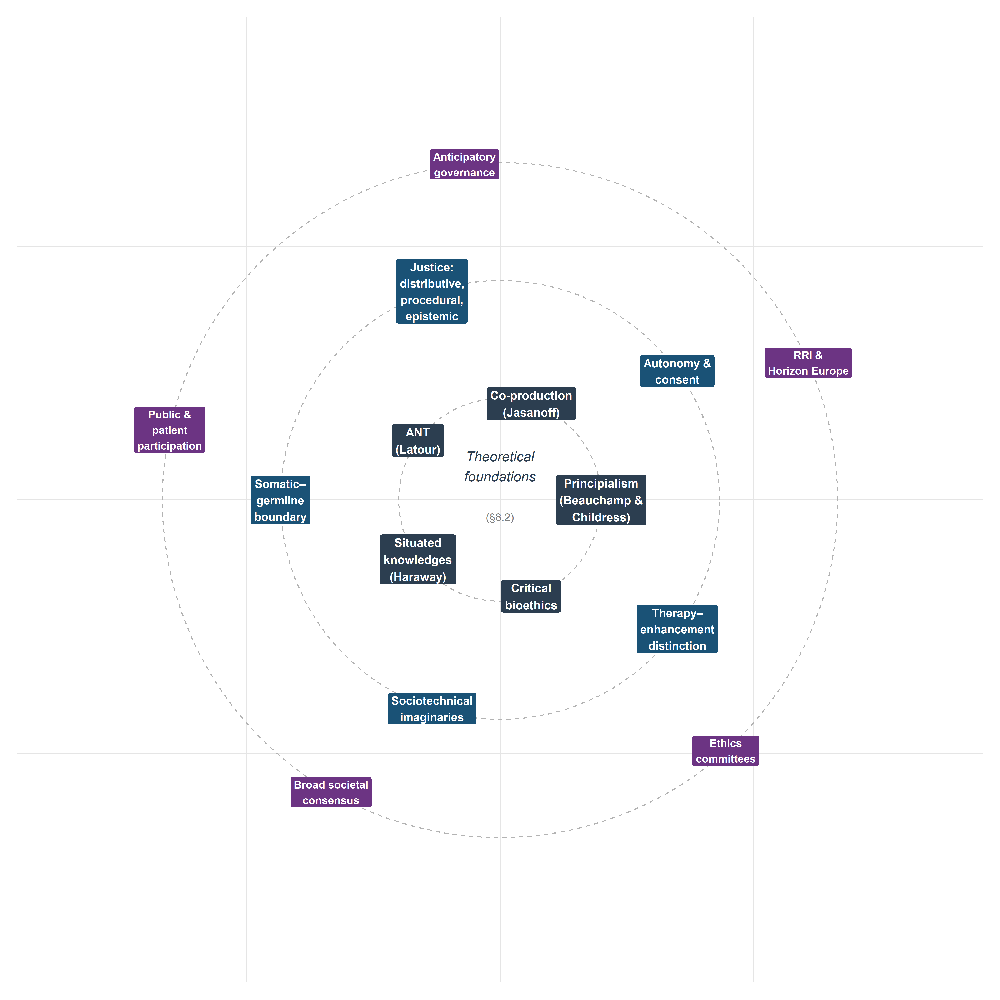
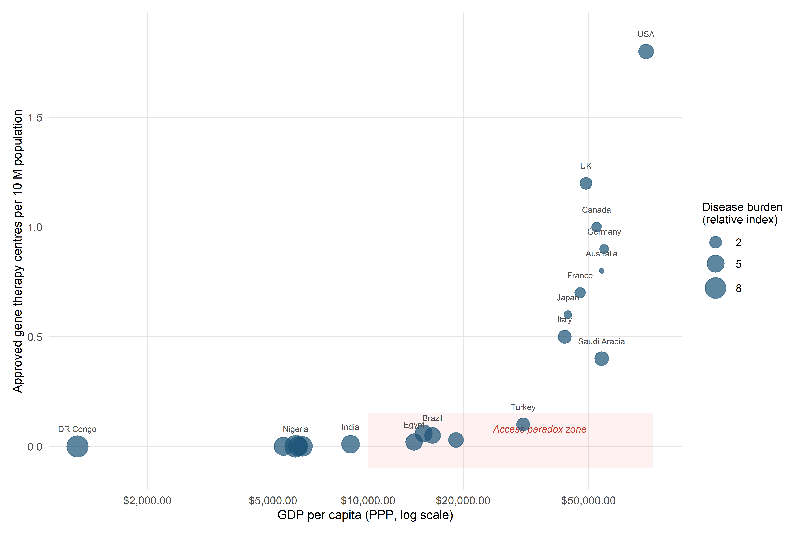

8 Bioethics and STS: Autonomy, Justice, and Sociotechnical Imaginaries
8.1 Introduction: beyond the ethical checklist
In January 2024, a young woman with sickle cell disease was evaluated at a European academic medical centre for ex vivo autologous gene therapy using CRISPR-Cas9. The clinical team explained the procedure: her haematopoietic stem cells would be harvested, edited to reactivate foetal haemoglobin expression, and reinfused after myeloablative conditioning. What the consent form could not adequately convey was the computational architecture that had shaped every stage of the treatment pipeline. An algorithm trained on datasets drawn predominantly from populations unlike hers had contributed to guide RNA selection. A deep learning model whose internal logic was opaque even to the treating clinician had predicted the off-target risk profile. A cost-effectiveness model built on contested discount rates had determined whether her national health system would reimburse the £1.6 million therapy at all. She was being asked to consent not only to a biological intervention but to a sociotechnical system whose normative commitments were encoded in training data, performance metrics, and institutional norms that no single document could make transparent.
This case—composited from published accounts of Casgevy administration but representative of the structural dynamics at work—condenses the central argument of the analysis that follows. Genome editing technologies and the AI systems now entangled with them do not simply raise ethical questions amenable to a canonical set of principles. They reconfigure the conditions under which ethical reasoning takes place. When an algorithmic system recommends a guide RNA with a predicted off-target profile below a given threshold, the question of what counts as acceptable risk is a sociotechnical achievement, co-produced by computational models, training datasets, regulatory categories, and the institutional norms of the laboratories and agencies that validate them. The conventional bioethics toolkit—principialism, consequentialism, deontological reasoning—remains indispensable, but it is insufficient unless situated within a broader analysis of power, knowledge, and institutional design.
Here, the sociotechnical analysis is the primary mode of inquiry, rather than an intermittent commentary on technical material. The analysis integrates principialist bioethics with STS concepts across five substantive domains—autonomy and informed consent, distributive and epistemic justice, the somatic–germline boundary, sociotechnical imaginaries, and the therapy–enhancement distinction—before turning to governance models that connect the normative work to the prospective scenarios of Chapter 9. Throughout, the empirical cases introduced in earlier chapters serve not as illustrations appended to theory but as sites where theoretical claims can be tested and refined.
A note on scope and positionality is warranted. The bioethics literature on genome editing is now vast, and no single chapter can claim comprehensive coverage. The selection of topics reflects the analytical priorities of this monograph—the convergence of CRISPR and AI, the European regulatory context, and the STS commitment to examining knowledge-power configurations—rather than an attempt to survey every ethical argument in the field. The analysis is written from within a particular intellectual tradition (European STS, critical bioethics, philosophy of technology) and does not claim a view from nowhere. The aspiration is not neutrality but rigour, transparency, and analytical accountability.
8.2 Theoretical foundations
8.2.1 Principialism revisited: Beauchamp and Childress in the genomic age
The Principles of Biomedical Ethics, first published in 1979 and now in its eighth edition (Beauchamp & Childress, 2019), established the four-principle framework—autonomy, beneficence, non-maleficence, and justice—that remains the dominant idiom of anglophone bioethics. Its influence on the governance of genome editing is direct: the reports of the National Academies of Sciences, Engineering, and Medicine (National Academies of Sciences, Engineering, and Medicine, 2017), the Nuffield Council on Bioethics (Nuffield Council on Bioethics, 2018), and the WHO Expert Advisory Committee on Human Genome Editing (World Health Organization, 2021) all deploy principialist vocabulary, even when they supplement it with additional considerations.
Principialism’s strengths are well known: it provides a common moral language across disciplinary boundaries, accommodates a degree of moral pluralism through the mechanism of specification and balancing, and is sufficiently abstract to apply across diverse clinical contexts. Yet its limitations become acute precisely in the domain of genome editing. Three deserve emphasis.
First, the principle of autonomy was conceptualised for a dyadic clinical encounter between a competent adult patient and a physician. Heritable genome editing disrupts this framing entirely: the individual most affected by a germline intervention—the future person—cannot consent to it. The principialist framework has no satisfactory mechanism for addressing intergenerational autonomy, a gap that becomes critical when AI-mediated decision support systems further complicate the attribution of agency in clinical choices (§8.3).
Second, justice in the principialist account is typically understood as distributive fairness in the allocation of healthcare resources. This is necessary but narrowly drawn. It does not adequately address what Miranda Fricker (Fricker, 2007) terms epistemic injustice—the systematic marginalisation of certain knowers and forms of knowledge in the production and evaluation of evidence. When genome editing governance relies on expert committees whose composition reflects existing hierarchies of credibility, the question of justice extends beyond resource allocation to the very constitution of the knowledge base on which decisions rest (§8.4).
Third, principialism’s specification strategy—resolving conflicts between principles by progressively narrowing their scope—tends to depoliticise disagreements that are fundamentally about power and value rather than conceptual clarity. Whether the somatic–germline boundary should be treated as a firm normative line or a pragmatic distinction subject to revision is not a question that specification alone can settle; it requires attending to the institutional, economic, and cultural forces that sustain or erode that boundary (§8.5).
These limitations do not invalidate principialism; they indicate the need for supplementary analytical resources. The following subsections introduce three such resources from the STS tradition.
NoteAnalytical note: the principialist–consequentialist tension in regulatory practice
A notable asymmetry pervades the governance of genome editing: the dominant idiom of bioethical deliberation is principialist (autonomy, beneficence, non-maleficence, justice), yet the dominant method of regulatory decision-making is consequentialist. Health technology assessment bodies such as NICE, ICER, and Germany’s IQWiG evaluate gene therapies through cost-effectiveness analysis, quality-adjusted life years (QALYs), and incremental cost-effectiveness ratios—metrics rooted in utilitarian reasoning about aggregate welfare maximisation. The principialist framework deployed in ethics committees and advisory reports thus operates in parallel with, rather than in dialogue with, the consequentialist calculus that determines actual reimbursement and access decisions.
This disjunction has practical consequences. When a principialist analysis concludes that a therapy respects autonomy and promotes beneficence, but a utilitarian HTA concludes that its cost per QALY exceeds the willingness-to-pay threshold, the two frameworks generate conflicting action-guidance without a shared metric for adjudication. The tension is particularly acute for curative gene therapies with high upfront costs and uncertain long-term benefits, where discount rates and time horizons—technical parameters within the utilitarian calculus—can determine whether a therapy is classified as cost-effective or not (Drummond et al., 2015).
Whether hybrid frameworks—such as multi-criteria decision analysis (MCDA), which integrates both quantitative and deliberative inputs—can bridge this gap, and whether the European emphasis on solidarity (§8.4.5) provides normative resources that neither pure principialism nor pure utilitarianism can supply on its own, are questions that would reward sustained investigation beyond the scope of the present analysis (Baltussen et al., 2019).
8.2.2 Jasanoff: co-production, sociotechnical imaginaries, and civic epistemology
Sheila Jasanoff’s programme of research offers perhaps the most comprehensive STS framework for analysing the governance of emerging biotechnologies. Three concepts are particularly relevant.
Co-production (Jasanoff, 2004) denotes the simultaneous making of natural and social order: scientific knowledge and political authority are produced together, not sequentially. Applied to CRISPR governance, co-production directs attention to how regulatory categories (e.g., the distinction between a gene therapy medicinal product and a genetically modified organism) are not simply derived from biological facts but are constitutive of the objects they regulate. The European Court of Justice ruling in Case C-528/16 (discussed in Chapter 7) is a paradigmatic instance: the legal classification of organisms produced by directed mutagenesis as GMOs under Directive 2001/18/EC was simultaneously a scientific claim about the nature of these organisms and a political claim about the appropriate scope of precautionary regulation.
Sociotechnical imaginaries (Jasanoff & Kim, 2015) are collectively held, institutionally stabilised, and publicly performed visions of desirable futures that are attainable through advances in science and technology. The concept is deployed extensively in §8.6, but its analytical value pervades the entire analysis: the framing of CRISPR as a ‘revolution’ in grant applications and media discourse, the promissory narratives surrounding gene therapy pricing, and the anticipatory governance frameworks examined in §8.8 all constitute imaginaries that shape and are shaped by material practices.
Civic epistemology (Jasanoff, 2005) refers to the culturally specific, institutionally embedded ways in which publics assess the credibility of knowledge claims bearing on collective life. Jasanoff’s comparative work demonstrates that the United States, the United Kingdom, Germany, and other polities differ systematically in how they constitute expertise, handle uncertainty, and legitimate public knowledge. This concept is essential for understanding why the governance of heritable genome editing takes different forms across jurisdictions (Chapter 7) and why proposals for ‘broad societal consensus’ as a precondition for clinical application (§8.8) must contend with the irreducible plurality of civic epistemologies.
8.2.3 Latour: Actor-Network Theory and CRISPR as actant
Bruno Latour’s Actor-Network Theory (ANT) (Latour, 2005) offers a complementary analytical vocabulary. ANT’s insistence on symmetry—treating human and non-human entities as equally capable of making a difference in the course of action—is particularly productive for analysing CRISPR–AI convergence. In ANT terms, the Cas9 protein, the guide RNA, the delivery vector, the off-target prediction algorithm, the regulatory dossier, and the patient advocacy group are all actants in a heterogeneous network whose configuration determines what genome editing is in any given setting.
This is not a metaphysical claim about the intentionality of molecules; it is a methodological commitment to following the associations through which capacities are distributed across a network rather than locating agency exclusively in human subjects. The practical consequence for bioethics is significant: if the capacity to act is distributed across human and non-human actants, then moral responsibility cannot be straightforwardly attributed to individual decision-makers. When an AI system contributes to the selection of a guide RNA that produces an unanticipated off-target effect, the question ‘who is responsible?’ requires tracing the network of associations—training data, model architecture, validation protocols, clinical guidelines, informed consent procedures—rather than identifying a single culpable agent.
Yet this is precisely where ANT’s analytical power becomes a normative liability. The methodological commitment to tracing associations without privileging human actors is illuminating as a descriptive strategy, but governance requires assigning responsibility, not merely mapping its distribution. Collins and Yearley (1992) raised this objection early: by dissolving the distinction between human agents and non-human actants, ANT risks producing descriptions of networks in which no entity bears moral accountability. In the context of CRISPR–AI convergence, where adverse outcomes may emerge from interactions among algorithms, datasets, clinicians, regulators, and biological systems, the governance question is not only how agency is distributed but to whom obligations and liabilities should attach. ANT can map the network; it cannot, by itself, generate the normative assignment that governance demands. The integrated framework proposed in §8.2.5 addresses this gap by supplementing ANT’s descriptive vocabulary with the normative commitments of relational autonomy, multi-dimensional justice, and co-productionist analysis.
Latour’s later work on matters of concern versus matters of fact (Latour, 2004) remains directly relevant despite this limitation. Genome editing is never simply a matter of fact (a biochemical mechanism) but always also a matter of concern (an object around which publics, experts, institutions, and affected communities gather with divergent interests and stakes). Bioethical analysis that treats CRISPR as a settled technical fact to which ethical considerations are subsequently applied misses the ongoing assembly through which the technology, its risks, and its meanings are simultaneously constituted.
8.2.4 Haraway, critical bioethics, and situated knowledge
Donna Haraway’s concept of situated knowledges (Haraway, 1988) provides the epistemological complement to Jasanoff’s institutional analysis. Haraway argues that all knowledge claims are produced from particular locations within social structures of power, and that the aspiration to a ‘god trick’—an unmarked, universal perspective—is both epistemologically untenable and politically dangerous. For genome editing governance, the implication is that the knowledge produced by laboratory scientists, computational biologists, bioethicists, regulators, patients, and disability rights advocates is differently situated and that no single perspective can claim comprehensive authority.
This epistemological commitment intersects with the broader programme of critical bioethics, which challenges the field’s historical tendency to universalise the perspective of the liberal, autonomous, Western subject. Scholars working in this tradition have argued that mainstream bioethics inadequately addresses structural injustice (Young, 2011), racial capitalism and its biotechnological extensions (Benjamin, 2019), and the colonial legacies that shape global health governance (Benatar, 2003). Applied to CRISPR, critical bioethics asks not only ‘is this intervention ethically permissible?’ but ‘whose interests does this technology serve, whose knowledge counts in its evaluation, and whose bodies bear its risks?’
8.2.5 Towards an integrated STS-bioethics framework
The analytical framework deployed in the remainder of the analysis integrates principialist bioethics with STS concepts through three operational commitments.
Relational autonomy: autonomy is understood not as a property of isolated individuals but as a capacity that is enabled or constrained by social, institutional, and technological relations (Mackenzie & Stoljar, 2000). This reframing is essential for analysing informed consent in contexts where AI systems mediate clinical decision-making (§8.3).
Multi-dimensional justice: justice is analysed across distributive, procedural, and epistemic dimensions simultaneously, following the recognition that resource allocation, decision-making processes, and knowledge production are interdependent rather than separable domains (§8.4).
Co-productionist analysis: technical and normative claims are examined as mutually constitutive rather than independent. The somatic–germline boundary, the therapy–enhancement distinction, and the concept of ‘broad societal consensus’ are treated not as pre-given categories but as ongoing accomplishments that require maintenance, negotiation, and institutional support (§§8.5, 8.7, 8.8).
This framework does not resolve all tensions between bioethics and STS—their disciplinary commitments differ in important respects—but it provides a sufficiently robust analytical architecture for the substantive analyses that follow.
8.3 Autonomy and informed consent in the age of AI-mediated editing
8.3.1 The classical model and its assumptions
The doctrine of informed consent, as codified in the Nuremberg Code (1947), the Declaration of Helsinki (1964, revised 2013), and subsequent regulatory instruments, rests on three conditions: the patient must receive adequate information about the proposed intervention and its alternatives; the patient must be competent to understand and deliberate about this information; and the patient’s decision must be voluntary, free from coercion or undue influence (Faden & Beauchamp, 1986). In the context of somatic gene therapy, these conditions are in principle satisfiable: the patient is an identifiable individual who can be informed about the expected benefits and known risks of the intervention, including the uncertainties inherent in a novel therapeutic modality.
Yet even in the somatic context, the convergence of CRISPR with AI-based decision support introduces complications that strain the classical model. When an algorithm trained on datasets that may not reflect the patient’s genetic background contributes to the selection of a guide RNA or the prediction of a repair outcome, the patient’s capacity to evaluate the basis for the clinical recommendation is attenuated. The opacity of deep learning models—the ‘black box’ problem extensively discussed in the AI ethics literature (London, 2019; Mittelstadt et al., 2016)—is not merely a technical limitation to be overcome by better interpretability methods; it poses a structural challenge to the epistemic conditions of informed consent. The patient is asked to consent not only to a biological intervention but to a computational process whose internal logic may be opaque even to the clinician administering the treatment.
8.3.2 AI-mediated autonomy and the AUTAI framework
The concept of AI-mediated autonomy addresses precisely this challenge. When algorithmic systems participate in the chain of decisions that leads from diagnosis to therapeutic intervention, the autonomy of the patient is neither simply preserved nor simply undermined; it is reconfigured. The patient’s capacity for self-determination now depends not only on the quality of clinical communication but on the transparency of the algorithmic pipeline, the representativeness of its training data, the validity of its performance metrics, and the governance structures that oversee its deployment.
This reconfiguration has been the subject of sustained investigation within the AUTAI programme (PID2022-137953OB-I00), which examines the conditions under which human autonomy can be meaningfully exercised in clinical contexts where AI systems mediate the production, interpretation, and communication of evidence. The programme’s central thesis—that autonomy in AI-mediated clinical decision-making requires institutional arrangements that ensure epistemic access, contestability, and accountability, beyond individual cognitive competence alone—has direct implications for genome editing governance.
Consider the case of a patient with sickle cell disease being evaluated for ex vivo autologous gene therapy (Chapter 5). The clinical decision involves multiple points at which AI systems may contribute: variant pathogenicity classification, guide RNA selection, off-target risk assessment, and repair outcome prediction. At each point, the patient’s ability to provide genuinely informed consent depends on whether the relevant algorithmic contributions are made transparent, whether their limitations are communicated honestly, and whether the patient has access to independent sources of information and support. The AUTAI framework proposes that these conditions be institutionalised through algorithmic informed consent protocols that supplement traditional clinical consent with structured disclosure of AI system involvement, performance characteristics, and known limitations.
The practical implementation of such protocols faces non-trivial obstacles. Clinicians themselves may not fully understand the computational methods underlying AI recommendations (Verghese et al., 2018), creating a second-order opacity problem. Regulatory frameworks such as the EU AI Act (Chapter 7) impose transparency requirements on high-risk AI systems but do not specify the form or granularity of disclosure in clinical genomics contexts. And the temporal structure of consent—typically a discrete event preceding intervention—may be inadequate for therapeutic processes that involve ongoing AI-mediated monitoring and adjustment. These challenges do not undermine the aspiration to AI-mediated autonomy; they define the institutional design problems that must be addressed.
NoteEmpirical gaps in AI-mediated consent research
The argument for algorithmic informed consent protocols developed above rests on normative premises about what adequate disclosure should include, but the empirical literature on patient comprehension in AI-mediated contexts remains thin and methodologically heterogeneous. The studies that do exist suggest grounds for concern. Survey-based research indicates that patients tend to overestimate the accuracy and objectivity of algorithmic recommendations, exhibiting what has been termed automation bias—a disposition to defer to computational outputs even when contradicted by other evidence (Goddard et al., 2012). In genomic medicine specifically, comprehension of probabilistic risk information is already low in conventional genetic counselling settings; the addition of AI-generated predictions introduces a further layer of opacity that existing consent procedures are not designed to address.
Two methodological priorities emerge for future research. First, experimental studies comparing comprehension and decisional quality under conventional versus AI-augmented consent protocols in gene therapy contexts would provide the empirical base that the normative argument currently lacks. Second, qualitative research exploring how patients from diverse cultural and educational backgrounds interpret AI-mediated recommendations—and whether the concept of ‘algorithmic transparency’ translates meaningfully across these contexts—would test the universality of the AUTAI framework’s assumptions. Until such evidence accumulates, proposals for algorithmic informed consent risk reproducing the gap between normative aspiration and clinical reality that has long characterised informed consent doctrine in general (Beauchamp & Childress, 2019, ch. 4).
8.3.3 Intergenerational autonomy and heritable genome editing
The consent problem becomes qualitatively different when the intervention is heritable. Germline editing affects not only the individual in whom it is performed but all subsequent generations who inherit the modified allele. The future persons who will live with the consequences of a germline edit cannot consent to it—a problem that Jürgen Habermas (Habermas, 2003) identified as the fundamental ethical objection to genetic programming. Habermas argued that germline modification threatens the conditions of moral autonomy by pre-determining characteristics of future persons without their possible agreement, thereby converting the relationship between generations from one of symmetrical recognition to one of asymmetrical design.
The force of Habermas’s argument depends on the scope of the modification in question. Correcting a pathogenic variant that would cause Huntington’s disease or Tay-Sachs disease is difficult to characterise as an imposition on autonomy if the alternative is a life of severe suffering and early death. But the argument gains traction as one moves along the spectrum from clearly pathogenic variants to risk alleles, polygenic traits, and putative enhancements, precisely because the normative evaluation of the modification becomes more contested and context-dependent. The somatic–germline boundary, examined in detail in §8.5, derives much of its normative significance from this asymmetry in consent.
From an STS perspective, the concept of intergenerational autonomy must also reckon with the epistemic limitations of present knowledge. Off-target effects that are undetectable with current methods may manifest in future generations living in environmental and social conditions that cannot be predicted. The promissory narratives surrounding genome editing—that techniques will become ‘safe enough’ for germline application through continued technological refinement—are themselves sociotechnical imaginaries (§8.6) that may or may not be warranted by future evidence. Intergenerational autonomy thus requires not only a mechanism for consent but a disposition of epistemic humility regarding the limits of current prediction.
8.3.4 Disability rights perspectives: editing as cure, editing as erasure
The disability rights critique of genome editing challenges the assumption—often implicit in clinical genetics and bioethics alike—that the elimination of genetic conditions is an unambiguous good. Scholars and activists within the disability community have argued that the framing of conditions such as deafness, achondraplasia, or Down syndrome as ‘defects’ to be corrected reflects and reinforces a medical model of disability that locates the problem in the individual body rather than in the social structures that fail to accommodate human variation (Asch, 2003; Parens & Asch, 2000).
This critique does not necessarily entail opposition to all genome editing. Many disability rights scholars distinguish between interventions that address conditions involving severe suffering and early death and interventions that target forms of human variation that are disabling primarily because of social arrangements (Shakespeare, 2006). The distinction is not always clear-cut, and the disability community is not monolithic in its views. But the critique performs an essential analytical function: it reveals that the category of ‘genetic disease’ is not a purely biological given but a normative judgement that reflects particular assumptions about what constitutes a worthwhile life.
For the governance of CRISPR–AI convergence, the disability rights perspective raises specific concerns. First, AI-based pathogenicity classifiers (Chapter 2) encode particular interpretations of variant significance that may not reflect the values of affected communities. The training data for such classifiers are drawn predominantly from clinical genetics databases that treat variant pathogenicity as a biomedical fact rather than a situated judgement. Second, the economic logic of gene therapy pricing (§8.4) creates incentives to expand the range of conditions classified as suitable for editing, a dynamic that disability rights scholars describe as the geneticisation of human variation (Lippman, 1991). Third, the availability of genome editing for certain conditions may erode social support for living with those conditions, a concern that echoes the expressivist objection to prenatal selection: that the elimination of traits expresses a negative judgement about the lives of existing persons who have those traits (Buchanan et al., 2000).
8.3.5 The right not to know
A final dimension of autonomy that warrants attention is the right not to know one’s genetic information, recognised in Article 10 of the Oviedo Convention and Article 10 of the UNESCO Universal Declaration on Bioethics and Human Rights. In the context of CRISPR–AI convergence, this right is complicated by the increasing integration of genomic information into AI-driven screening and surveillance programmes. Projects such as PREDI-LYNCH, which develop AI-powered liquid biopsy technologies for early cancer detection in Lynch syndrome carriers, confront the tension between the population-level benefits of early detection and the individual’s right to decline genetic knowledge.
The right not to know is not merely a negative liberty—a right to be left alone—but reflects deeper concerns about the relationship between genetic information and self-understanding. Knowledge of carrier status or elevated genetic risk can reshape a person’s self-conception, social relationships, and reproductive choices in ways that are not straightforwardly beneficial. For adolescent and young adult (AYA) cancer survivors—the population addressed by the PredictAYA (LATE-AYA) programme—the right not to know intersects with decisions about fertility, reproductive planning, and long-term surveillance in contexts where the psychological burden of genetic information may compound the effects of prior cancer treatment.
Respecting the right not to know within AI-mediated screening systems requires deliberate institutional design: opt-out mechanisms that are genuinely accessible, counselling protocols that do not assume the superiority of knowledge over ignorance, and algorithmic architectures that can withhold information at the individual level while still contributing to population-level research. These requirements are at once technical and normative; they embody a particular commitment to the priority of individual self-determination over informational maximisation.
8.4 Justice: distributive, procedural, and epistemic
8.4.1 The access problem: gene therapies at £1.6 million
The approval of Casgevy (exagamglogene autotemcel) for sickle cell disease and transfusion-dependent β-thalassaemia marked a clinical milestone, but it also crystallised a distributive justice problem that the gene therapy field had anticipated for years. The price of a single Casgevy treatment—approximately £1.6 million in the United Kingdom, with comparable figures in other jurisdictions—places it among the most expensive therapies ever approved. Cost-effectiveness analyses by bodies such as NICE and ICER have suggested that the price may be justified by lifetime cost offsets from reduced hospitalisations, blood transfusions, and disease management, but these analyses depend on discount rates, time horizons, and quality-of-life metrics that are themselves contested (Garrison et al., 2021).
The distributive justice implications extend beyond individual access. Sickle cell disease disproportionately affects populations of sub-Saharan African, Middle Eastern, and South Asian descent—communities that, in many high-income countries, already experience structural disadvantages in healthcare access. The concentration of approved gene therapy centres in a small number of tertiary hospitals in wealthy nations creates additional geographic barriers. As of early 2026, the number of centres qualified to administer Casgevy in the European Union remained in the low double digits, effectively limiting access to patients within reasonable distance of major academic medical centres.
The framing of this as a pricing problem amenable to market-based solutions (outcomes-based contracts, instalment payments, annuity models) obscures a deeper structural issue: the political economy of innovation in advanced therapies. The public funding that underwrites basic research in CRISPR biology and AI-based design tools—including Horizon Europe programmes such as those examined in this monograph—generates intellectual resources that are then developed into commercial products by private companies operating under patent protection. The resulting distribution of benefits and costs raises questions about the adequacy of existing mechanisms for ensuring that publicly funded innovation serves the public interest (Mazzucato, 2013).
8.4.2 North–South asymmetries in CRISPR infrastructure
The distributive justice problem is amplified at the global scale. The capacity to develop, manufacture, and deliver CRISPR-based therapies is concentrated in a small number of high-income countries. The Good Manufacturing Practice (GMP) facilities required for autologous cell therapies, the regulatory expertise needed to navigate approval processes, the clinical infrastructure for patient conditioning and long-term follow-up, and the computational resources for AI-based design and monitoring are all unevenly distributed.
For conditions with high prevalence in low- and middle-income countries (LMICs)—sickle cell disease, β-thalassaemia, HIV—this concentration creates a paradox: the populations with the greatest disease burden are the farthest from accessing the therapies designed to address it. The establishment of gene therapy centres in sub-Saharan Africa, where sickle cell disease is most prevalent, would require not only financial investment but the construction of entire sociotechnical systems encompassing manufacturing, quality control, regulatory oversight, clinical expertise, and patient support infrastructure.
International initiatives such as the WHO Framework for Human Genome Editing Governance (World Health Organization, 2021) have articulated the principle that the benefits of genome editing should be shared equitably across nations. But the mechanisms for realising this principle remain underdeveloped. Voluntary technology transfer, differential pricing, and capacity-building programmes are necessary but insufficient without structural reforms to intellectual property regimes and global health governance that address the root causes of inequity.
8.4.3 Procedural justice: who participates in governance?
Justice requires not only fair outcomes but fair processes. The governance of genome editing has been dominated by expert bodies—national academies, regulatory agencies, international advisory committees—whose composition reflects the existing distribution of scientific authority. The participation of patients, disability communities, Indigenous peoples, and publics from LMICs in these governance processes has been limited and often tokenistic.
The International Summit on Human Gene Editing (Washington, 2015), the Second International Summit (Hong Kong, 2018), and the Third International Summit (London, 2023) illustrate both the potential and the limitations of existing governance formats. These summits brought together scientists, ethicists, regulators, and some patient representatives to deliberate on the permissibility and governance of heritable genome editing. But the dominant voices were those of laboratory scientists and anglophone bioethicists, and the summits’ institutional format—invited presentations, panel discussions, closing statements drafted by organising committees—did not facilitate meaningful deliberation across epistemic communities (Jasanoff & Hurlbut, 2018).
Procedural justice in genome editing governance requires institutional innovations that go beyond consultation to genuine co-production of governance frameworks. This might include: structured representation of patient and disability organisations in regulatory advisory committees; citizen assemblies or deliberative mini-publics convened to inform policy on heritable genome editing; mechanisms for incorporating Indigenous knowledge systems and non-Western ethical traditions into governance deliberations; and transparent processes for identifying and managing conflicts of interest among expert advisors.
8.4.4 Epistemic justice: whose knowledge counts?
Miranda Fricker’s (2007) concept of epistemic injustice identifies two forms of systematic disadvantage in knowledge practices: testimonial injustice, in which the credibility of a speaker is deflated due to prejudice, and hermeneutical injustice, in which a gap in collective interpretive resources disadvantages certain groups in making sense of their social experience.
Both forms are operative in the governance of CRISPR–AI convergence. Testimonial injustice manifests when the experiential knowledge of patients and disability communities is treated as anecdotal rather than evidential, or when the concerns of communities in LMICs are dismissed as reflecting ‘insufficient understanding’ of the science. Hermeneutical injustice manifests when the conceptual frameworks available for deliberating about genome editing—risk-benefit analysis, cost-effectiveness, clinical equipoise—are drawn exclusively from the epistemic traditions of Western biomedicine and health economics, leaving other frameworks for understanding bodily integrity, intergenerational responsibility, and human flourishing without institutional purchase.
The concept of epistemic justice provides a normative standard for evaluating governance arrangements: they should be designed to counteract both testimonial and hermeneutical injustice by ensuring that diverse forms of knowledge are actively solicited, taken seriously, and allowed to reshape the terms of deliberation. This standard is demanding, and no existing governance arrangement fully satisfies it. But it provides a critical benchmark against which institutional designs can be assessed.
A concrete instance of hermeneutical injustice: disability communities have argued that framing deafness or dwarfism as conditions amenable to CRISPR ‘correction’ presupposes a deficit model that lacks purchase within Deaf culture or within achondroplasia communities where the condition is experienced as identity rather than pathology. The conceptual vocabulary of ‘gene therapy’ itself encodes an evaluative stance that these communities contest — but for which no institutionally recognised counter-vocabulary exists in regulatory deliberation.
8.4.5 European solidarity and access to gene therapy
The principle of solidarity, which occupies a distinctive place in European political and legal thought, offers a complementary normative resource. Unlike the liberal tradition’s emphasis on individual rights and fair distribution, solidarity centres on mutual obligation, shared vulnerability, and collective responsibility (Prainsack & Buyx, 2017). Applied to genome editing, a solidarity-based framework would hold that the benefits of publicly funded innovation in CRISPR and AI are not private goods to be allocated by market mechanisms but common goods whose distribution is a matter of collective obligation.
Within the European Union, the principle of solidarity is invoked in the Treaty on the Functioning of the European Union (Article 168), in the Horizon Europe programme’s emphasis on ‘widening participation’, and in the EU Cancer Mission’s commitment to reducing inequalities in cancer outcomes across Member States. The PREDI-LYNCH project exemplifies this commitment: its consortium of 28 partners from 16 European countries is designed to ensure that liquid biopsy technologies for Lynch syndrome surveillance are developed in a way that is scalable and applicable across different healthcare systems, not only those with the most advanced clinical infrastructure.
The tension between solidarity as normative principle and solidarity as institutional reality is visible in reimbursement decisions. As of early 2026, Casgevy was reimbursed for SCD in England (under an outcomes-based managed access agreement) but not yet in several EU Member States whose HTA processes were still underway — a divergence that the centralised EMA marketing authorisation was designed to prevent but cannot, by itself, resolve.
Whether solidarity can be given institutional form beyond the European context remains an open question. The concept’s normative force derives from pre-existing relationships of mutual obligation, which are more easily identified within polities that share legal and institutional frameworks than across the heterogeneous terrain of global health governance. Nevertheless, the principle provides a regulative ideal that challenges the assumption that market mechanisms are the default or optimal mode of distributing the benefits of genome editing innovation.
8.5 The somatic–germline boundary: ontological and normative analysis
8.5.1 Historical construction of the distinction
The distinction between somatic and germline cells is a biological observation, but the normative boundary between somatic and germline intervention is a social construction with a specific intellectual and institutional history. The distinction was articulated in its modern ethical form in the early 1980s, when the recombinant DNA debates prompted the US President’s Commission for the Study of Ethical Problems in Medicine (President’s Commission for the Study of Ethical Problems in Medicine and Biomedical and Behavioral Research, 1982) to differentiate between modifications that affect only the treated individual and those that could be transmitted to future generations. The Asilomar Conference (1975) and subsequent regulatory frameworks embedded this distinction into institutional practice, and it was subsequently adopted by the Council of Europe’s Oviedo Convention (1997), which prohibits interventions seeking to modify the human germline (Article 13).
The boundary’s normative significance was thus established in a particular historical context: the early years of genetic engineering, when both the technical capacity and the political will to draw a clear line between permissible and impermissible interventions were available. But the boundary was never solely a function of biological difference; it was stabilised by institutional, legal, and discursive practices that maintained its salience even as the underlying biology revealed increasing complexity.
8.5.2 Technical erosion: mosaicism, off-target effects, and somatic-to-germline leakage
Subsequent technical developments have progressively complicated the neat biological distinction on which the normative boundary was mapped. Three forms of erosion are particularly significant.
First, somatic mosaicism in genome-edited organisms—the coexistence of edited and unedited cells within the same individual—demonstrates that the boundary between ‘edited’ and ‘unedited’ is not always sharp at the cellular level. When CRISPR is applied to embryos (as in the He Jiankui case), mosaicism means that some cells may carry the intended edit while others do not, with unpredictable consequences for phenotype and heritability.
Second, off-target effects in somatic gene therapy carry a non-zero probability of affecting germline cells, particularly in systemic delivery modalities (Chapter 4). While the probability is low for most current therapeutic approaches, it is not negligible, and it challenges the assumption that somatic interventions can be cleanly separated from germline consequences.
Third, in vivo delivery of CRISPR components—now preferred for its scalability relative to ex vivo approaches—raises the possibility of unintended germline modification if editing reagents reach gonadal tissues. The development of tissue-specific delivery systems (Chapter 4) aims to mitigate this risk, but the possibility of somatic-to-germline leakage means that the boundary between somatic and germline intervention is probabilistic rather than categorical.
These technical observations do not, by themselves, dissolve the normative boundary. But they shift the terms of the argument: the question is no longer whether a clean biological distinction exists (it does not, at the margins) but whether the normative boundary should be maintained as a regulatory convention despite its biological imprecision, on the grounds that it serves important functions in governance and public deliberation.
8.5.3 Normative arguments for and against heritable genome editing
The arguments for permitting heritable genome editing, under specified conditions, typically appeal to: the prevention of serious genetic disease that could not be addressed by preimplantation genetic testing or somatic therapy; reproductive liberty as a fundamental interest of prospective parents; and the moral imperative to relieve suffering when the means to do so are available (Savulescu et al., 2015). Proponents argue that a categorical prohibition on germline editing is unjustifiably paternalistic and that a regulated pathway, governed by appropriate safeguards, would better serve affected families than a blanket ban.
The arguments against heritable genome editing appeal to: the impossibility of obtaining consent from future persons (§8.3.3); the risk of unanticipated effects across generations, given the current limits of off-target detection and long-term outcome prediction; the potential for erosion of the therapy–enhancement boundary (§8.7); the social justice implications of unequal access; and the concern that permitting heritable modification for any purpose would set a precedent that could not be effectively bounded (Darnovsky, 2019). The precautionary argument is reinforced by the observation that, for the vast majority of monogenic conditions, preimplantation genetic testing (PGT-M) offers an alternative pathway to healthy offspring without germline modification, limiting the number of cases where germline editing would be the only option to a very small subset of prospective parents (both homozygous for the same pathogenic variant).
An STS-informed analysis neither resolves this normative disagreement nor treats it as a matter of individual moral judgement divorced from institutional context. Instead, it directs attention to the conditions under which the disagreement is conducted: who has standing to participate, what forms of evidence are admitted, and how the framing of the question (‘should we permit heritable genome editing?’) forecloses or enables particular answers.
8.5.4 Slippery slope: conceptual analysis and empirical evidence
The slippery slope argument—that permitting heritable genome editing for therapeutic purposes will inevitably lead to enhancement applications—is among the most frequently invoked and most frequently dismissed arguments in the debate. Philosophers have long noted that the argument’s logical form is weak: the fact that a boundary is difficult to draw does not entail that it will be crossed (Schauer, 1985). But the argument’s empirical form deserves more serious attention.
The empirical slippery slope asks not whether a logical distinction between therapy and enhancement can be maintained in principle but whether the institutional, economic, and cultural forces operating in practice will tend to erode that distinction over time. The history of other biomedical technologies—cosmetic surgery, performance-enhancing drugs in sport, cognitive enhancement with stimulant medications—suggests that boundaries between therapeutic and non-therapeutic use are indeed porous under pressure from consumer demand, professional interest, and commercial incentive (Parens, 1998).
In the context of genome editing, the empirical slippery slope is reinforced by the development of AI-based design tools. As computational methods for predicting the phenotypic consequences of specific edits become more precise and comprehensive (Chapters 2–3), the technical barrier between ‘correcting a pathogenic variant’ and ‘optimising a polygenic trait’ diminishes. The normative boundary must therefore be maintained by institutional mechanisms—regulation, professional norms, public deliberation—rather than by technical limitations alone.
8.5.5 Reproductive autonomy and the gamete editing frontier
The emergence of gamete editing technologies and synthetic gamete research (connected to the GRIFOLS-2024 and GRIFOLS-2022 programmes) introduces a further complication. If it becomes technically feasible to edit gametes in vitro before fertilisation, the boundary between somatic and germline intervention is redrawn yet again: the ‘patient’ is a cell that will contribute to a future person but is not yet part of one.
The concept of reproductive autonomy—the right of individuals to make decisions about whether, when, and how to reproduce—is widely accepted as a fundamental interest in liberal bioethics (Robertson, 1994). But the extension of reproductive autonomy to encompass the genetic modification of gametes or embryos is contested, precisely because it implicates interests beyond those of the reproducing individuals. The GRIFOLS research programme on synthetic DNA and assisted reproduction engages directly with this frontier: the development of gamete-level editing technologies for use in assisted reproduction contexts raises questions about the scope of reproductive choice, the status of gametes as objects of intervention, and the regulatory frameworks needed to govern a domain that does not fit neatly into existing categories of either reproductive medicine or gene therapy.
From an STS perspective, the gamete editing frontier is also a site of ontological politics (Mol, 1999): the practices through which the entities that governance frameworks must regulate (gametes, embryos, synthetic biological materials) are constituted as objects of particular kinds. Whether a gene-edited gamete is classified as a ‘treatment’ of the gamete provider, a ‘modification’ of a future person, or an ‘enhancement’ of the reproductive process depends on classificatory practices that are simultaneously technical, legal, and normative.
8.6 Sociotechnical imaginaries of CRISPR
8.6.1 The ‘CRISPR revolution’ narrative: construction and critique
The dominant narrative surrounding CRISPR-Cas9 is one of revolution: a transformative technology that will fundamentally alter the treatment of genetic disease, the practice of agriculture, and perhaps the trajectory of human evolution. This narrative has been co-produced by scientific publications, institutional press releases, media coverage, and—crucially—the Nobel Prize award of 2020 to Emmanuelle Charpentier and Jennifer Doudna. The revolutionary framing serves multiple functions: it attracts funding, legitimates research programmes, generates public excitement, and positions CRISPR within a lineage of epoch-making scientific achievements.
Yet the revolutionary narrative obscures as much as it reveals. It effaces the decades of prior work on restriction enzymes, zinc finger nucleases, and TALENs that made CRISPR’s development possible. It downplays the significant technical challenges that remain—delivery efficiency, off-target effects, immune responses, manufacturing scalability—in favour of a teleological story in which these obstacles are treated as temporary rather than potentially intractable. And it frames CRISPR as a singular technology rather than a heterogeneous ensemble of tools (Cas9, Cas12, Cas13, base editors, prime editors, epigenome editors) with different capabilities, limitations, and application profiles (Chapter 1).
An STS analysis of the CRISPR revolution narrative does not dismiss it as mere rhetoric; narratives are performative—they shape the material conditions of research by directing funding, structuring expectations, and framing the criteria by which success and failure are evaluated (Borup et al., 2006). The point is not that the narrative is false but that it is partial: it selects certain aspects of the technology for emphasis and renders others invisible, with consequences for governance, public understanding, and the allocation of research resources.
NoteCritical reception and refinement of sociotechnical imaginaries
The concept of sociotechnical imaginaries as deployed here follows Jasanoff and Kim’s original formulation: collectively held, institutionally stabilised visions of desirable futures attainable through science and technology (Jasanoff & Kim, 2015). Since its introduction, however, the concept has experienced rapid uptake across STS and adjacent fields—energy transitions, digital health, agricultural biotechnology—accompanied by concerns about analytical dilution. Sovacool and Hess (2017) observed that the term is now frequently used as a loose synonym for ‘expectation’, ‘narrative’, or ‘vision’, losing the institutional specificity (stabilisation through state power, legal frameworks, and funding architectures) that distinguishes imaginaries from more diffuse forms of collective anticipation.
This inflationary tendency matters for the analysis of CRISPR governance. If every optimistic statement about gene therapy is labelled a ‘sociotechnical imaginary’, the concept loses its discriminatory power: it can no longer distinguish between, say, a researcher’s grant-application rhetoric and the European Commission’s institutionalised commitment to a Cancer Mission with specific governance structures and funding lines. The analytical value of the concept depends on maintaining the criterion of institutional stabilisation: an imaginary is not merely imagined but enacted through budgets, regulations, organisational designs, and accountability mechanisms.
Future refinement of the analysis in §8.6 should engage with alternative frameworks—such as Beckert’s (2016) sociological account of ‘fictional expectations’ in economic life, or the expectations literature of Borup et al. (already cited in §8.6.2)—to calibrate the specific contribution that the imaginaries concept makes to understanding CRISPR governance, as distinct from the contributions of these adjacent analytical tools.
8.6.2 Promissory discourse in funding applications
The performativity of promissory narratives is particularly visible in the genre of the research funding application. Horizon Europe calls for proposals in the area of cancer prevention and early detection—including the calls to which PREDI-LYNCH and PredictAYA responded—necessarily require applicants to articulate the expected societal impact of their proposed research. This requirement incentivises a form of promissory discourse in which uncertain futures are presented with a degree of confidence that exceeds the available evidence (Brown, 2003).
The point is not that researchers are dishonest; rather, the institutional structure of competitive grant funding creates a systematic pressure towards optimistic framing that is well understood by participants but rarely acknowledged in the resulting research outputs. The societal impact statements in Horizon Europe applications—commitments to ‘change clinical practice’, ‘set new standards’, ‘deliver solutions’—are not predictions but performative commitments that mobilise resources, create obligations, and shape the expectations against which research programmes are subsequently evaluated.
The recognition of promissory discourse as a structural feature of research governance has implications for evaluation. If societal impact claims are understood as performative rather than predictive, then evaluation frameworks should assess not whether promises were literally fulfilled but whether the research programme generated knowledge, tools, and institutional capacities that contribute to the broader goals—even if the specific pathway to impact differed from what was anticipated.
8.6.3 Patient advocacy and the politics of hope
Patient advocacy organisations have become powerful actors in the governance of genome editing, shaping research agendas, regulatory processes, and public discourse. The experiences of organisations such as the Sickle Cell Disease Association of America, the European Organisation for Rare Diseases (EURORDIS), and Lynch syndrome patient networks illustrate the complex political dynamics of advocacy in the age of genomic medicine.
Advocacy organisations operate within what sociologists of health and illness have termed the politics of hope (Novas, 2006): a configuration of expectations, emotions, and institutional relationships in which patients and their families invest in the promise of biomedical innovation as a pathway to relief from suffering. This investment is neither irrational nor uncritical—many advocacy organisations possess sophisticated scientific and regulatory expertise—but it creates particular dynamics: a tendency to frame research in terms of urgency and breakthrough rather than incremental progress; pressure on regulatory agencies to accelerate approval processes; and potential tensions between the interests of current patients (who may benefit from expanded access to experimental therapies) and future patients (who may benefit from more rigorous evidence generation).
From an STS perspective, patient advocacy organisations are epistemic actors who produce distinctive forms of knowledge—experiential, embodied, and collectively elaborated—that are not reducible to clinical evidence or bioethical reasoning (Rabeharisoa et al., 2014). The challenge for governance is to create institutional spaces in which this experiential knowledge can genuinely inform decision-making without being either dismissed as anecdotal or co-opted as legitimation for decisions already made on other grounds.
8.6.4 Science fiction as sociotechnical imagination
The cultural imagination of genome editing extends well beyond scientific and policy discourse into literature, film, and other narrative arts. Works such as Aldous Huxley’s Brave New World (1932), Andrew Niccol’s Gattaca (1997), and Kazuo Ishiguro’s Never Let Me Go (2005) have shaped public understanding of genetic modification in ways that scientific communication cannot replicate. These works are not merely entertainment or cautionary tales; they constitute sociotechnical imaginaries in their own right, offering visions of futures in which genetic technologies have reshaped social relations, institutional structures, and the meaning of human identity.
The relationship between fictional and scientific imaginaries is bidirectional. The ‘designer baby’ trope, which pervades public discourse about genome editing, derives its cultural force from decades of science fiction rather than from any current technical capability. Conversely, the language of scientific publications—‘editing’, ‘programming’, ‘writing’ the genome—draws on computational metaphors that carry their own imaginative freight, framing biological systems as textual objects amenable to precise authorial control (Kay, 2000).
For governance purposes, the significance of fictional imaginaries lies in their capacity to expand or constrain the range of futures that are considered possible and desirable. If public deliberation about genome editing is framed exclusively by the dystopian imaginary of Gattaca, it will tend towards prohibition; if framed by the promissory imaginary of ‘curing genetic disease’, it will tend towards permissive regulation. A mature governance framework must be capable of holding multiple imaginaries in tension, neither capitulating to techno-optimism nor paralysed by dystopian anxiety.
8.6.5 Media framing and public perception
The mass media constitute a primary site through which publics encounter genome editing, and the framing choices made by journalists and editors have measurable effects on public attitudes (Scheufele et al., 2017). Research on media coverage of CRISPR has identified several recurring frames: the progress frame (CRISPR as scientific breakthrough), the ethics/morality frame (CRISPR as raising profound ethical questions), the risk frame (CRISPR as dangerous or unpredictable), and the regulation frame (CRISPR as requiring governance) (Calabrese et al., 2020).
The distribution of these frames varies across media ecosystems and national contexts, reflecting the civic epistemologies (§8.2.2) of different polities. Coverage in US media has tended to emphasise the progress and risk frames; European coverage has given relatively greater weight to ethics and regulation. The availability of AI-generated content and algorithmic curation of news feeds introduces additional complexity: the frames through which publics encounter genome editing are now substantially mediated by recommendation algorithms whose optimisation criteria (engagement, click-through rates) may not align with the goal of informed public deliberation.
8.7 Enhancement, therapy, and the normative boundary
8.7.1 The therapy–enhancement distinction: defensible or dissolving?
The distinction between therapy (restoring normal function) and enhancement (augmenting function beyond the normal range) has served as a foundational normative boundary in bioethics and healthcare policy. Health insurance systems, regulatory agencies, and professional bodies routinely invoke it to determine which interventions are medically necessary and which are elective. In the context of genome editing, the distinction carries particular weight because it is widely assumed to define the limit of ethically permissible application: editing to prevent or treat disease is broadly supported; editing to enhance human capacities is broadly opposed.
Yet the distinction has been subjected to sustained philosophical critique. Norman Daniels (Daniels, 2000), building on Boorse’s biostatistical theory of disease, attempted to anchor the distinction in species-typical functioning, but this approach faces the objection that ‘normal functioning’ is itself a statistical and normative construct rather than a biological given. Traits such as height, cognitive ability, and immune function exist on continua, and the boundary between ‘treatment’ (raising a value from below normal to normal) and ‘enhancement’ (raising a value from normal to above normal) is drawn by convention rather than nature.
The convergence of CRISPR with AI-based phenotype prediction (Chapter 3) sharpens this problem. As polygenic risk scores and multi-trait prediction models become more precise, the capacity to identify genetic variants associated with complex traits—cognitive performance, athletic capacity, personality dimensions—will increase. Whether the modification of such variants constitutes therapy or enhancement depends on normative judgements about the significance of particular trait values, judgements that cannot be derived from the predictive model itself.
8.7.2 Cognitive and physical enhancement: current discourse
The prospect of genetic enhancement has generated a substantial philosophical literature. Allen Buchanan and colleagues (Buchanan et al., 2000) argued that the therapy–enhancement distinction is insufficiently robust to serve as a normative boundary and that some enhancements may be morally obligatory if they can prevent serious harms. Julian Savulescu (Savulescu, 2005) advanced the principle of procreative beneficence: that parents have a moral obligation to select or modify embryos to give their children the best possible life, including through genetic enhancement.
Against these positions, Michael Sandel (Sandel, 2007) argued that the aspiration to genetic enhancement reflects a failure of humility before the ‘giftedness’ of human life—an inability to accept the contingency of our natural endowments. Habermas (Habermas, 2003) framed the objection in terms of autonomy: genetic programming threatens the conditions of moral self-understanding by converting what should be experienced as given into something chosen by others.
The philosophical debate remains unresolved, but it is now shaped in material ways by the possibilities opened by CRISPR–AI convergence. The technical capacity to move from single-gene corrections to multi-gene optimisation remains limited (Chapter 3), but the direction of research—larger genomic datasets, more precise prediction models, more efficient editing tools—points towards a future in which the technical barriers to enhancement are lower than they are today.
8.7.4 Transhumanism and its critics
At the most expansive end of the enhancement spectrum, transhumanist thinkers argue that genome editing and other emerging technologies should be deployed to transcend the biological limits of the human species. Transhumanism holds that the enhancement of human capacities—cognitive, physical, emotional, and longevity—is not only permissible but desirable, and that the precautionary attitudes that dominate European governance are unjustifiably conservative (Bostrom, 2003).
The critics of transhumanism are diverse. Bioconservatives such as Leon Kass (Kass, 2002) and Francis Fukuyama (Fukuyama, 2002) argue that the modification of human nature threatens the foundations of human dignity. Feminist critics observe that transhumanist discourse tends to be gender-blind, failing to analyse how enhancement technologies intersect with existing structures of gender inequality (Roache & Clarke, 2009). Post-colonial critics note that the transhumanist imaginary is culturally specific—rooted in Enlightenment progressivism and Silicon Valley libertarianism—and does not speak for a universal aspiration (Mbembe, 2017).
For the purposes of this monograph, the transhumanism debate is significant not because genetic enhancement is imminent (it is not, for complex traits) but because it defines one pole of the normative space within which governance frameworks must operate. The challenge for governance is to maintain a regulatory framework that is responsive to legitimate therapeutic innovation while being robust against the erosion of normative boundaries under pressure from commercial interest, cultural aspiration, and technological possibility.
8.8 Governance models: deliberation, anticipation, responsibility
8.8.1 Responsible Research and Innovation in Horizon Europe
The European Commission’s framework for Responsible Research and Innovation (RRI), developed under Horizon 2020 and continued in modified form under Horizon Europe, was conceived as an institutional vehicle for anticipatory governance of emerging technologies. RRI is organised around six dimensions: public engagement, open access, gender equality, ethics, science education, and governance. In the domain of genome editing, RRI provides a normative framework for ensuring that research programmes attend to societal implications from the outset rather than treating them as afterthoughts.
However, the implementation of RRI has been uneven and its effectiveness debated. Critics have argued that RRI tends to be procedural rather than substantive—focusing on whether the right boxes have been ticked rather than whether governance outcomes have actually changed (Stilgoe et al., 2013). In the context of Horizon Europe-funded projects, RRI requirements are sometimes experienced by researchers as compliance obligations rather than genuine opportunities for reflexive engagement with societal implications.
The challenge is to move from compliance-oriented RRI to transformative RRI: governance practices that genuinely reshape research directions in response to societal values and concerns. This requires institutional structures that create incentives for reflexivity rather than penalising non-compliance alone, training programmes that equip researchers with analytical tools for engaging with STS and bioethics beyond awareness of ethical rules, and evaluation criteria that assess societal engagement on its substance rather than its procedural form.
8.8.2 Anticipatory governance and real-time technology assessment
Anticipatory governance (Guston, 2014) goes beyond RRI in proposing that governance should operate prospectively, shaping technological directions before they become locked in, rather than reactively, regulating technologies after they have been developed and deployed. The concept draws on insights from innovation studies about path dependence and technological lock-in: once a technology has been embedded in institutional structures, professional practices, and commercial supply chains, the costs of changing course escalate dramatically.
Applied to CRISPR–AI convergence, anticipatory governance would involve: systematic horizon-scanning for emerging applications and their societal implications; real-time technology assessment that tracks the co-evolution of technical capabilities and normative frameworks; scenario planning that explores alternative governance pathways (Chapter 9); and institutional mechanisms for course correction when evidence or values shift.
The practical implementation of anticipatory governance faces a fundamental tension: the earlier governance intervenes, the greater its capacity to shape technological development, but also the greater the uncertainty about which directions will actually materialise. Governing too early risks stifling beneficial innovation; governing too late risks confronting fait accompli. Navigating this tension requires governance frameworks that are adaptive rather than fixed—capable of adjusting as evidence accumulates and societal priorities evolve.
8.8.3 Public and patient participation
The call for public participation in genome editing governance has been a recurring theme since the first International Summit in 2015. The WHO Expert Advisory Committee’s recommendation that governance should involve ‘inclusive global dialogue’ and the Nuffield Council’s call for ‘broad societal debate’ reflect a widespread normative commitment to democratic governance of technologies with far-reaching societal implications.
Yet the concept of public participation is more complex than it initially appears. Participation can range from informing (one-directional communication from experts to publics) through consulting (soliciting public views on expert-defined questions) to co-producing (engaging publics as genuine partners in framing questions, generating evidence, and designing governance) (Arnstein, 1969). Much of what is described as ‘public engagement’ in genome editing governance falls towards the informing end of this spectrum, raising questions about whether it constitutes genuine democratic governance or a legitimation strategy.
The PredictAYA (LATE-AYA) programme’s emphasis on capturing patient-reported outcome measures (PROMs) and psychosocial impacts offers one model for moving beyond informing towards consulting and co-production. By structuring research to prioritise the concerns and care preferences of AYA cancer survivors, the programme instantiates a form of participatory research that takes experiential knowledge seriously as a source of evidence.
8.8.4 Broad societal consensus: concept and critique
Several governance frameworks have proposed broad societal consensus as a precondition for permitting heritable genome editing. The Nuffield Council on Bioethics (Nuffield Council on Bioethics, 2018), for instance, argued that heritable genome editing could be ethically permissible if, among other conditions, it were consistent with principles of social justice and solidarity, and were introduced through a process of inclusive public deliberation.
The concept of broad societal consensus raises several analytical questions. First, what counts as consensus? Unanimity is neither achievable nor necessary, but the threshold between ‘broad consensus’ and ‘majority opinion’ is unspecified. Second, consensus among whom? If the relevant public extends beyond national boundaries—as it arguably does for technologies that affect the human germline—the feasibility of achieving consensus across diverse polities with different civic epistemologies (§8.2.2) becomes doubtful. Third, consensus on what? The question ‘should heritable genome editing be permitted?’ is too coarse to elicit meaningful public deliberation; it needs to be specified by condition, context, and alternative before publics can engage with it productively.
An STS analysis suggests that ‘broad societal consensus’ functions less as a practicable governance criterion and more as a discursive resource—a way of signalling the importance of public legitimacy without specifying the institutional mechanisms through which it would be achieved. Making the concept operational requires translating it into concrete institutional designs: deliberative processes with clear mandates, representative composition, transparent procedures, and mechanisms for integrating their outputs into regulatory decision-making.
8.8.5 Ethics committees: from gatekeeping to co-production
Research Ethics Committees (RECs) and Institutional Review Boards (IRBs) have been the primary institutional mechanism for ethical oversight of biomedical research since the 1970s. In the context of genome editing, these bodies review clinical trial protocols, assess risk-benefit ratios, and evaluate informed consent procedures. Their role is well established and their contribution to research governance is substantial.
However, the REC/IRB model faces limitations when applied to technologies whose implications extend beyond individual research projects to systemic societal effects. The case-by-case review of individual protocols does not easily accommodate questions about the cumulative effects of multiple research programmes, the direction of a technological field, or the systemic justice implications of particular research agendas. Moreover, the composition of RECs/IRBs—typically dominated by biomedical scientists, clinicians, and bioethicists from the principialist tradition—may not reflect the full range of perspectives relevant to technologies such as genome editing.
A co-productionist model of ethical oversight would supplement the traditional REC/IRB function with: upstream engagement in the framing of research questions, not only the review of completed protocols; representation of diverse epistemic communities, including patients, disability advocates, and social scientists; consideration of cumulative and systemic effects alongside individual risk-benefit assessment; and reflexive evaluation of the committee’s own assumptions, composition, and epistemic limitations. Such a model does not replace the existing system but enriches it, moving ethical oversight from a gatekeeping function to a co-productive one.
8.9 Chapter summary
The integrated STS-bioethics framework developed here and deployed across the core normative dimensions of CRISPR–AI convergence demonstrates that the ethical challenges posed by genome editing cannot be adequately addressed within a single disciplinary framework: principialist bioethics provides essential normative vocabulary but requires supplementation by STS concepts—co-production, sociotechnical imaginaries, civic epistemology, epistemic justice—to account for the institutional, political, and epistemic dimensions of governance.
The substantive analyses converge on a set of interconnected findings. Autonomy in the age of AI-mediated genome editing is not a given but an achievement that requires deliberate institutional design—algorithmic transparency, structured consent protocols, and mechanisms for contesting computational recommendations (§8.3). Justice must be understood multidimensionally, encompassing distributive, procedural, and epistemic dimensions evaluated against the structural inequalities that shape access to both the technology and the governance processes that regulate it (§8.4). The somatic–germline boundary, while biologically imprecise, retains normative significance as a regulatory convention that serves important governance functions, provided it is maintained through institutional mechanisms rather than assumed to be self-enforcing (§8.5). Sociotechnical imaginaries—the CRISPR revolution narrative, promissory discourse in funding applications, patient advocacy, and fictional representations—are constitutive of governance itself, shaping the expectations, resources, and evaluative criteria through which genome editing is developed and regulated (§8.6). And the therapy–enhancement distinction, though philosophically contested, remains a practically necessary boundary that must be maintained through governance rather than dissolved by philosophical argument alone (§8.7). These five lines of analysis are not independent: the erosion of one boundary (somatic–germline) creates pressure on another (therapy–enhancement), while epistemic injustice in governance compounds distributive injustice in access.
Figure 8.1 maps the relationships between the theoretical foundations (§8.2), the substantive domains (§§8.3–8.7), and the governance models (§8.8) that connect the normative analysis to the prospective scenarios of Chapter 9.

NoteTable 8.1 — Summary of normative frameworks applied in this chapter
| Framework | Core concepts | Application domain | Key limitation |
|---|---|---|---|
| Principialism (Beauchamp & Childress) | Autonomy, beneficence, non-maleficence, justice | Clinical decision-making, informed consent | Intergenerational autonomy; depoliticisation of disagreement |
| Co-production (Jasanoff) | Co-production, sociotechnical imaginaries, civic epistemology | Regulatory governance, public deliberation | Can underspecify normative commitments |
| ANT (Latour) | Actants, networks, matters of concern | Distributed agency in CRISPR–AI systems | Difficulty attributing moral responsibility |
| Situated knowledges (Haraway) | Positionality, partial perspective, accountability | Epistemic justice, knowledge pluralism | Risk of epistemic relativism |
| Critical bioethics | Structural injustice, racial capitalism, colonial legacies | Global access, North–South asymmetries | May lack constructive governance proposals |
| Relational autonomy (Mackenzie & Stoljar) | Socially embedded autonomy, enabling conditions | AI-mediated consent, disability perspectives | Specification of enabling conditions |
| Epistemic justice (Fricker) | Testimonial injustice, hermeneutical injustice | Governance participation, evidence evaluation | Operationalisation in institutional design |
8.7.3 Social determinants versus genetic determinants: the framing effect
A critical perspective on the enhancement debate notes that it systematically overestimates the contribution of genetic factors to outcomes such as health, cognitive ability, and socioeconomic success while underestimating the contribution of social determinants—nutrition, education, housing, exposure to pollution, structural racism. This framing effect has distributional consequences: if cognitive underperformance is attributed to genetic deficiency rather than educational inequality, the policy response shifts from social investment to individual genetic modification, with predictable effects on public resource allocation (Benjamin, 2019).
The convergence of genome editing with AI-based prediction amplifies this framing effect. Polygenic scores that predict educational attainment or income are sometimes presented in media and policy discourse as if they identified genetic causes of social outcomes, when in fact they capture statistical associations that are mediated by complex gene-environment interactions and may not be stable across populations or historical periods (Harden, 2021). An STS-informed bioethics insists on maintaining analytical clarity about the difference between statistical prediction and causal explanation, and on attending to the political consequences of conflating the two.